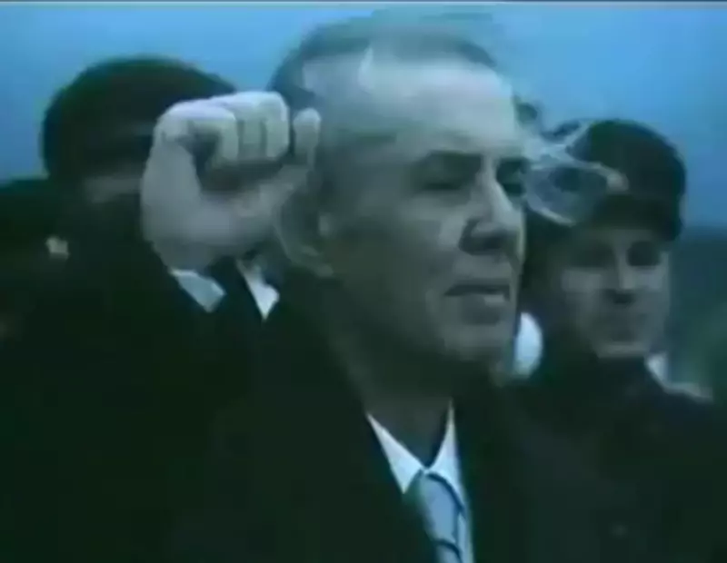

LUCAS CENIR
VEREINIGT EUCH!

Enver Hoxha (1908-1985) foi um revolucionário albanês que comandou a Guerra Antifascista de Libertação Nacional, fundou o Partido Comunista da Albânia (posteriormente renomeado Partido do Trabalho do Albânia) e liderou a República Popular (Socialista) da Albânia entre 1944 e 1985. Na arena internacional, Enver representou uma liderança moral do movimento comunista internacional após a morte de Stálin ao encabeçar o movimento antirrevisionista e erguer alto a bandeira do marxismo-leninismo diante da traição soviética. Com determinação e coragem incomparáveis, conduziu a Albânia no caminho marxista-leninista sob o cerco mundial imperialista e social-imperialista, enfrentando as mais duras consequências da sua posição de princípios pela pureza do comunismo segundo os ensinamentos de Marx, Engels, Lênin e Stálin e pela independência e soberania do seu país seguindo os princípios do internacionalismo proletário.O revisionismo só cresce, ao passo em que estamos em minoria, mas nós seguiremos em frente, jamais nos renderemos. Nós estamos com a razão, o marxismo-leninismo está do nosso lado e portanto venceremos, certamente venceremos.
O sangue puro dos nossos filhos inunda as ruas das vilas e cidades da Albânia. Eles tombam heroicamente pela liberdade do nosso país, são levados à forca com um sorriso no rosto, porque cumpriram seu dever para com o seu povo, porque não eram capazes viver sem liberdade, porque não eram capazes de ver o seu povo sofrer sob o jugo mais sórdido já visto no nosso país.
Chamado ao campesinato albanês, 1942
A História desconhece situação igual a esta, em que os cabeças do imperialismo, os inimigos de classe, cobrem de tantos elogios e se empolgam tanto com um líder de um partido comunista quanto com Khrushchov, a quem expressam tão abertamente sua aprovação, satisfação e esperança com sua linha política. Isso por si só deixa claro a quem as ações de Khrushchov beneficiam, a quem servem seus pontos de vista e suas ações.
Carta aberta aos membros do Partido Comunista da União Soviética, 1964
A revolução não é uma festa de casamento, e sim uma grande guerra popular, e na guerra os inimigos atacam com toda a sua fúria. Contudo, os marxistas-leninistas não têm medo de lutar, ainda que possam sofrer reveses temporários; muito pelo contrário, é na luta e na revolução que eles se tornam mais fortes e invencíveis.
Na luta e na revolução, os marxistas-leninistas se tornam fortes e invencíveis, 1967
A vigilância e a violência legítima da classe operária contra seus inimigos de classe aterrorizam os revisionistas, são as únicas forças capazes de vencê-los, o único caminho para sair desta situação desastrosa em que o socialismo e o comunismo se encontram hoje nos países em que os revisionistas estão no poder.
A classe operária dos países revisionistas deve ir à luta e restabelecer a ditadura do proletariado, 1968
A história mundial seria, aliás, muito fácil de fazer se a luta fosse empreendida apenas sob a condição de probabilidades infalivelmente favoráveis.
Karl Marx, Carta a Ludwig Kugelmann, 17 Abril 1871
Mas os anti-autoritários pedem que o Estado político autoritário seja abolido de um golpe, antes mesmo que se tenham destruído as condições sociais que o fizeram nascer. Pedem que o primeiro ato da revolução social seja a abolição da autoridade. Já alguma vez viram uma revolução, estes senhores? Uma revolução é certamente a coisa mais autoritária que se possa imaginar; é o ato pelo qual uma parte da população impõe a sua vontade à outra por meio das espingardas, das baionetas e dos canhões, meios autoritários como poucos; e o partido vitorioso, se não quer ser combatido em vão, deve manter o seu poder pelo medo que as suas armas inspiram aos reacionários.
Friedrich Engels, Sobre a Autoridade, Março 1873
O fascismo é uma força reacionária que tenta preservar, por meio da violência, o velho mundo. Que farão os senhores com os fascistas? Discutirão com eles? Tratarão de convencê-los? Isso não teria, absolutamente, nenhum efeito. Os comunistas não idealizam, em absoluto, os métodos violentos, não querem, porém, ser apanhados de surpresa; não podem esperar que o velho regime se retire da cena, espontaneamente; vêem que o velho sistema se defende violentamente, e, por isso, dizem à classe operária: Preparem-se para responder com violência à violência;...
Josef Stálin, Reformismo ou Revolução?, 23 Julho 1934